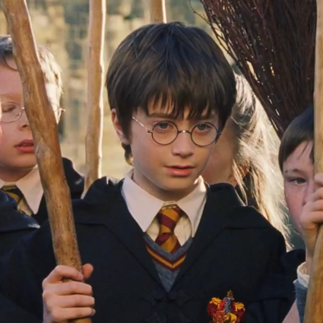
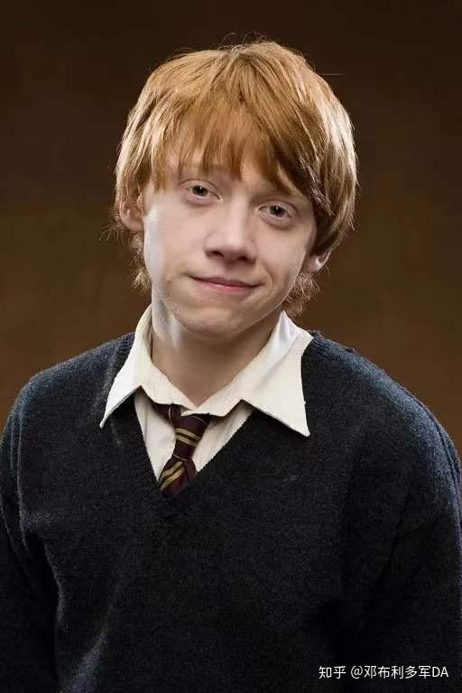
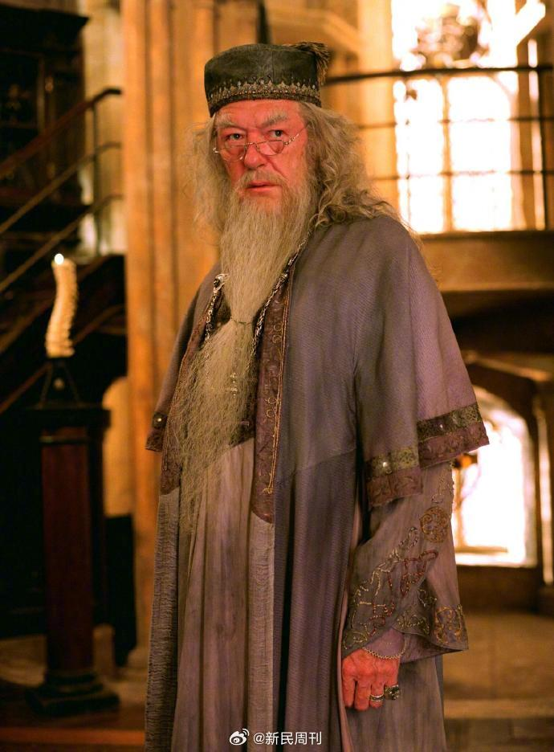
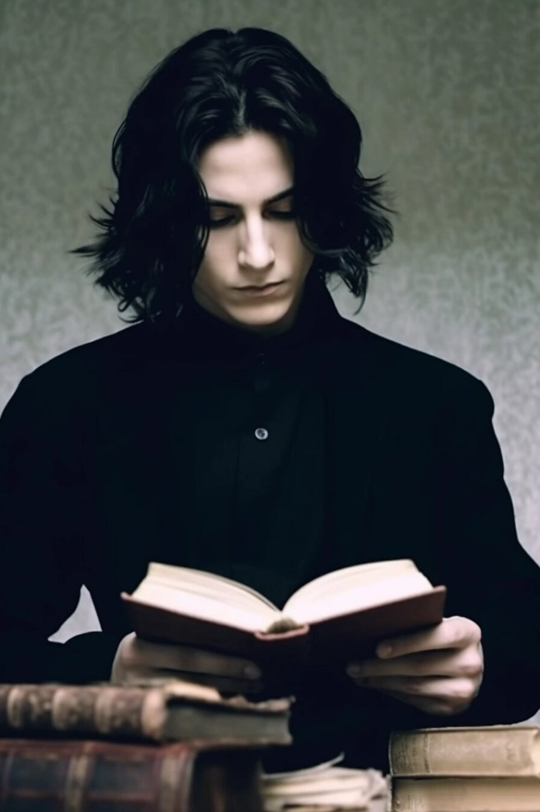
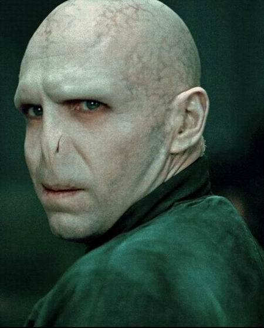
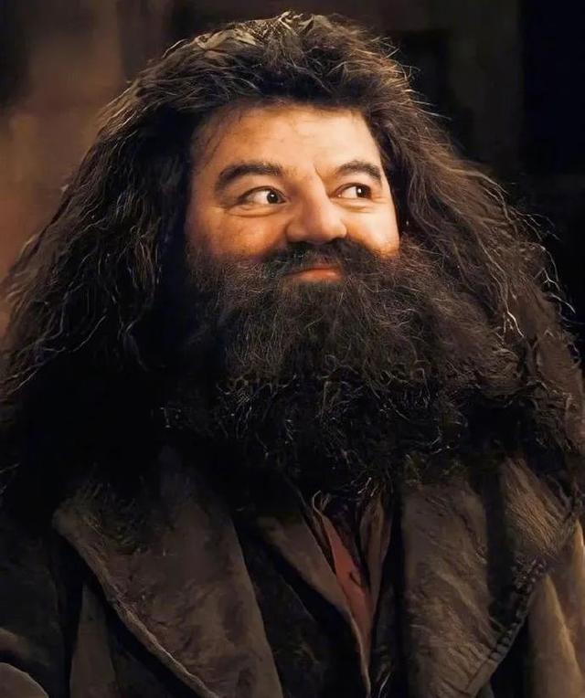
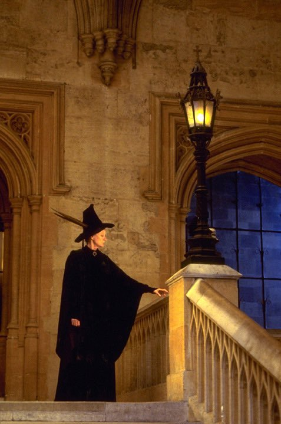
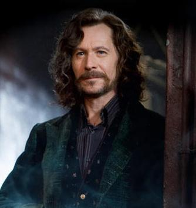

主要角色介绍

哈利·波特 (Harry Potter)
系列的主人公，被称为"大难不死的男孩"。在一岁时父母被伏地魔杀害，自己却奇迹般地活了下来。在霍格沃茨求学期间，他展现出了非凡的勇气和魔法天赋，最终战胜了黑魔王伏地魔。
赫敏·格兰杰 (Hermione Granger)
哈利最好的朋友之一，出身麻瓜家庭但拥有出色的魔法天赋。她聪明好学，知识渊博，经常在关键时刻用她的智慧帮助朋友们解决难题。是格兰芬多学院的骄傲。

罗恩·韦斯莱 (Ron Weasley)
哈利的另一位挚友，来自纯血统的韦斯莱家族。虽然有时缺乏自信，但在关键时刻总是勇敢地站在朋友身边。他的忠诚和幽默感是三人组中不可或缺的一部分。

阿不思·邓布利多 (Albus Dumbledore)
霍格沃茨的校长，被认为是当代最伟大的巫师。他智慧深邃，总是以独特的方式指导哈利。虽然看似神秘莫测，但他对学生们的关爱和对正义的坚持从未动摇。

西弗勒斯·斯内普 (Severus Snape)
魔药学教授，表面上对哈利充满敌意，但实际上一直在暗中保护他。他复杂的性格和对莉莉·波特的深情，使他成为整个系列中最具争议也最令人难忘的角色之一。

伏地魔 (Lord Voldemort)
系列的主要反派，原名汤姆·马沃罗·里德尔。他对权力和永生的渴望使他走上了黑魔法的道路，成为魔法世界最可怕的黑巫师。他与哈利之间的宿命对决贯穿整个系列。

鲁伯·海格 (Rubeus Hagrid)
霍格沃茨的钥匙管理员和神奇生物保护课教师。他是第一个告诉哈利魔法世界真相的人，也是哈利在霍格沃茨最信任的朋友之一。虽然有时鲁莽，但他的善良和忠诚无人能及。

米勒娃·麦格 (Minerva McGonagall)
变形术教授兼格兰芬多学院院长。她严格但公正，对学生要求很高但也深深关爱着他们。在危机时刻，她总是坚定地站在正义一边，是霍格沃茨的中流砥柱。

小天狼星布莱克 (Sirius Black)
哈利的教父，詹姆·波特的挚友。曾被误认为背叛了波特夫妇，在阿兹卡班监狱度过了十二年。他的出现给了哈利家庭的温暖，虽然相处时间不长，但他们之间的感情深厚。